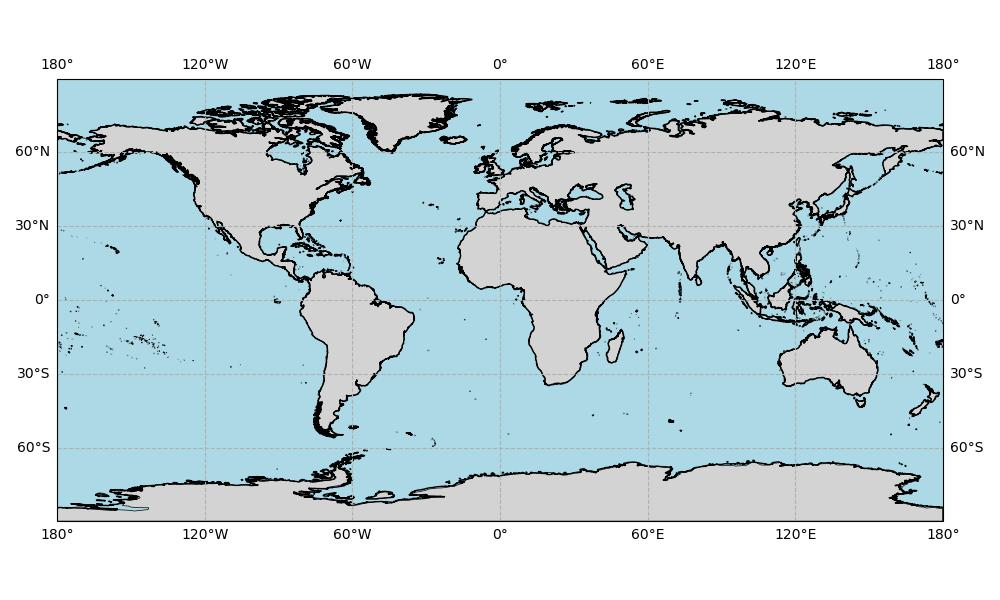

About Quarks
Exploring the links
between ocean and sky.
Ocean–atmospheric science, climate change, and variability.
About me
Quarks is a dedicated ocean-atmospheric researcher specializing in climate change and variability. Expertise encompasses key climate phenomena such as El Niño-Southern Oscillation (ENSO), Pacific Decadal Oscillation (PDO), Madden-Julian Oscillation (MJO), and Indian Ocean Dipole (IOD). Leveraging advanced techniques in deep learning with PyTorch and machine learning frameworks, including Convolutional Neural Networks (CNNs) and Recurrent Neural Networks (RNNs), drive impactful insights into climate dynamics. Research focuses on developing robust models that enhance our understanding and predictive capabilities of complex climate interactions, contributing to sustainable environmental practices and informed policy decisions.


Research interests
- El Niño–Southern Oscillation (ENSO)
- Pacific Decadal Oscillation (PDO)
- Madden–Julian Oscillation (MJO)
- Indian Ocean Dipole (IOD)
From physical models to data
Research combines coupled modelling with machine learning approaches, including CNNs and RNNs, to study climate dynamics.
Get in touch